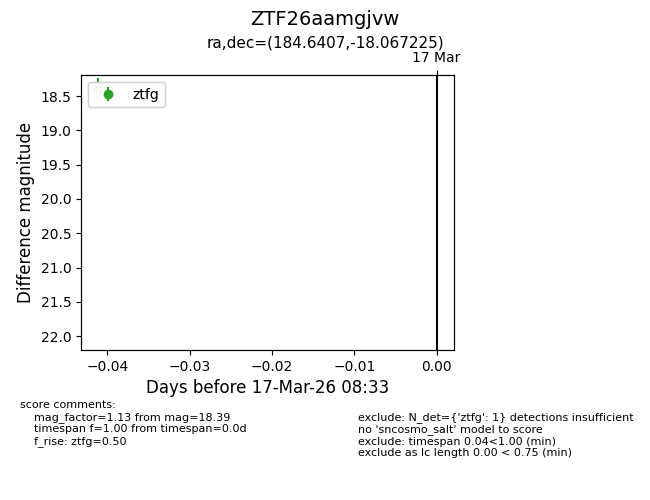
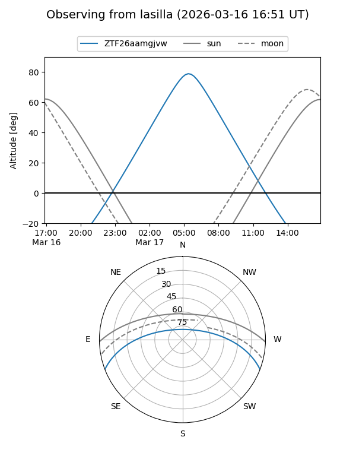
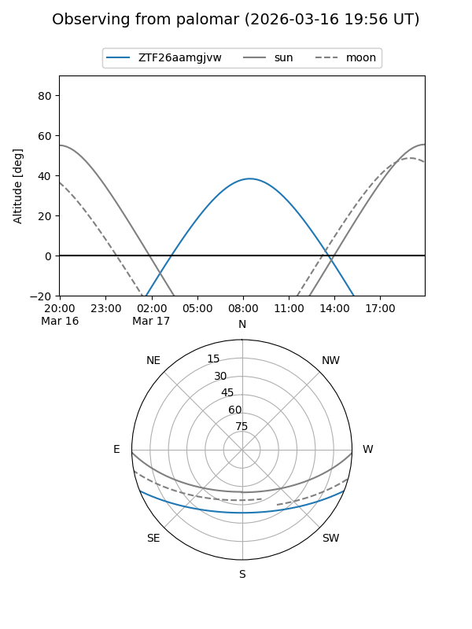

ZTF26aamgjvw
Target ZTF26aamgjvw at 2026-03-17 08:35
Aliases and brokers:
FINK: link
Lasair: link
ALeRCE: link
alt names
ZTF26aamgjvw (ztf,fink_ztf)
Coordinates:
equatorial (ra, dec) = 184.6407,-18.06722
equatorial (HMS+DMS) = 12:18:33.76,-18:04:02.01
galactic (l, b) = (292.0216,+44.10697)
Flags:
Photometry:
last ztfg=18.39
1 ztfg detections
Lightcurve

Visibility


Additional plots